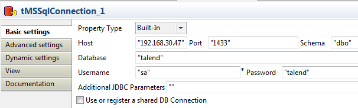

This component is closely related to tMSSqlCommit and tMSSqlRollback. Both components are usually used with a tMSSqlConnection component to open a connection for the current transaction.
|
Component family |
Databases/MSSQL | |
|
Function |
tMSSqlConnection opens a connection to the database for a current transaction. | |
|
Purpose |
This component allows you to commit all of the Job data to an output database in just a single transaction, once the data has been validated. | |
|
Basic settings |
Property type |
Either Built-in or Repository. |
|
|
|
Built-in: No property data stored centrally. |
|
|
|
Repository: Select the repository file in which the properties are stored. The fields that follow are completed automatically using the data retrieved. |
|
|
Host |
Database server IP address. |
|
|
Port |
Listening port number of DB server. |
|
|
Schema |
Schema name. |
|
|
Database |
Name of the database. |
|
|
Username and Password |
DB user authentication data. |
|
|
Additional JDBC parameters |
Specify additional connection properties for the DB connection you are creating. |
|
|
Use or register a shared DB Connection |
Select this check box to share your connection or fetch a connection shared by a parent or child Job. This allows you to share one single DB connection among several DB connection components from different Job levels that can be either parent or child. WarningThis option is incompatible with the Use dynamic job and Use an independent process to run subjob options of the tRunJob component. Using a shared database connection together with a tRunJob component with either of these two options enabled will cause your Job to fail. Shared DB Connection Name: set or type in the shared connection name. |
|
Advanced settings |
Auto commit |
Select this check box to automatically commit a transaction when it is completed. |
|
|
tStatCatcher Statistics |
Select this check box to gather the job processing metadata at a Job level as well as at each component level. |
|
Usage |
This component is to be used along with MSSql components, especially with tMSSqlCommit and tMSSqlRollback. | |
|
Limitation |
n/a | |
The scenario describes a Job that reads the employee data from a text file, inserts the data into a table of an MSSQL database, then extracts useful data from the table, and displays the information on the console.

This scenario involves the following components:
tMSSqlConnection: establishes a connection to the MSSQL server.
tFileInputDelimited: reads the input file, defines the data structure and sends it to the next component.
tMSSqlOutput: writes data it receives from the preceding component into a table of an MSSQL database.
tMSSqlInput: extracts data from the table based on an SQL query.
tLogRow: displays the information it receives from the preceding component on the console.
tMSSqlCommit: commits the transaction in the connected MSSQL server.
Drop the following components from the Palette onto the design workspace: tMSSqlConnection, tFileInputDelimited, tMSSqlOutput, tMSSqlInput, tLogRow, and tMSSqlCommit.
Connect tMSSqlConnection to tFileInputDelimited using a Trigger > OnSubjobOk link.
Do the same to connect tFileInputDelimited to tMSSqlInput and tMSSqlInput to tMSSqlCommit.
Connect tFileInputDelimited to tMSSqlOutput using a Row > Main link.
Do the same to connect tMSSqlInput to tLogRow.
Procedure 7.1. Opening a connection to the MSSQL server
Double-click the tMSSqlConnection component to open its Basic settings view in theComponent tab.
In the Host field, type in the IP address or hostname of the MSSQL server, 192.168.30.47 in this example.
In the Port field, type in the port number of the database server, 1433 in this example.
In the Schema field, type in the schema name, dbo in this example.
In the Database field, type in the database name, talend in this example.
In the Username and Password fields, enter the credentials for the MSSQL connection.
Procedure 7.2. Reading the input data
Double-click the tFileInputDelimited component to open its Component view.

Click the [...] button next to the File Name/Stream field to browse to the input file. In this example, it is D:/Input/Employee_Wage.txt. This text file holds three columns: id, name and wage.
id;name;wage 51;Harry;2300 40;Ronald;3796 17;Theodore;2174 21;James;1986 2;George;2591 89;Calvin;2362 84;Ulysses;3383 4;Lyndon;2264 17;Franklin;1780 86;Lyndon;3999
In the Header field, type in 1 to skip the first row of the input file.
Click Edit schema to define the data to pass on to the tMSSqlOutput component. In this example, we define id as the key, and specify the length and precision for each column respectively.
Click OK to close the schema editor. A dialog box opens, and you can choose to propagate the schema to the next component.

Related topic: the section called “tFileInputDelimited”.
Procedure 7.3. Writing the data into the database table
Double-click the tMSSqlOutput component to open its Basic settings view in the Component tab.

Type in required information for the connection or use the existing connection you have configured before. In this example, we select the Use an existing connection check box. If multiple connections are available, select the connection you want to use from the Component List drop-down list.
In the Table field, type in the name of the table you want to write the data to: Wage_Info in this example. You can also click the [...] button next to the Table field to open a dialog box and select a proper table.
Select Create table if not exists from the Action on table drop-down list.
Select Insert if not exists from the Action on data drop-down list.
Click Sync columns to retrieve the schema from the preceding component.
Procedure 7.4. Extracting useful information from the table
Double-click the tMSSqlInput component to open its Basic settings view in the Component tab.

Select the Use an existing connection check box. If multiple connections are available, select the connection you want to use from the Component List drop-down list.
Click Edit schema to define the data structure to be read from the table. In this example, we need to read all three columns from the table.

In the Table Name field, type in the name of the table you want to read the data from: Wage_Info in this example.
In the Query field, fill in the SQL query to be executed on the table specified. To obtain the data of employees whose wages are above the average value and order them by id, enter the SQL query as follows:
SELECT * FROM Wage_Info WHERE wage > (SELECT avg(wage) FROM Wage_Info) ORDER BY id